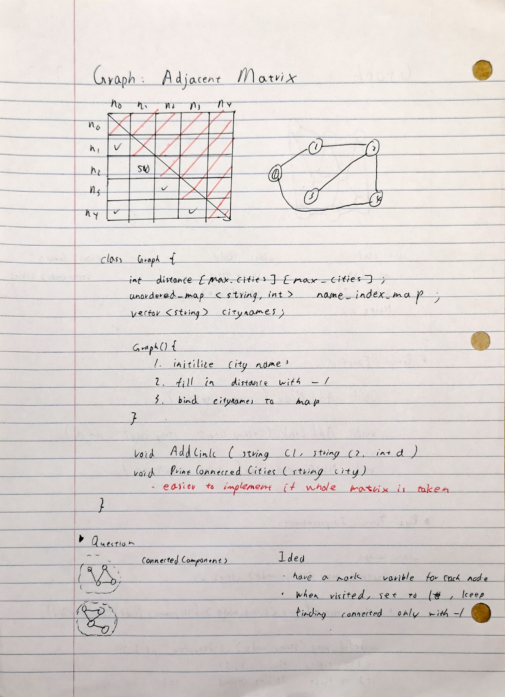

Week 8 Monday: Adjacent Matrix for Graphs
alternate algorithm: fill in the entire grid, easier for printing since taking same memory
Class Definition
class Graph {
public:
int distance[MAX_CITIES][MAX_CITIES]; //matrix for distance
unordered_map<string, int> name_index_map;
vector<string> city_names;
Graph() {}
void AddLink(string c1, string c2, int d);
void PrintConnectedCities(string city);
}
Constructor
Graph() {
/*
1. initialize city names
2. fill in distance with default value
3. bind city names to map with index
*/
//initlize city names
city_names = {"A","B","C"};
for (int i = 0; i < MAX_CITIES; i++) {
for (int j = 0; j < MAX_CITIES; j++) {
distance[i][j] = -1;
}
}
//fill the unordered map
for (int i = 0; i < city_names.size(); i++) {
name_index_map.insert(pair<string, int>(city_names[i],i));
}
}
Add Link
void AddLink(string c1, string c2, int d) {
unordered_map<string, int>::iterator it1;
unordered_map<string, int>::iterator it2;
it1 = name_index_map.find(c1);
it2 = name_index_map.find(c2);
if (it1 == name_index_map.end() || it2 == name_index_map.end()) {
return;
}
int ind1 = it1->second;
int ind2 = it2->second;
distance[ind1][ind2] = d;
distance[ind2][ind1] = d;
//only add to one side, think about y=x graph (y>x, y<x)
/*{
if (ind1 < ind2) {
distance[ind1][ind2] = d;
} else {
distance[ind2][ind1] = d;
}
}*/
}
Print Connected Cities
void PrintConnectedCities(string city) {
unordered_map<string, int>::iterator it;
it = name_index_map.find(city);
if (it==name_index_map.end()) return;
int ind = it->second;
for (int i = 0; i < MAX_CITIES; i++) {
if (distance[ind][i] >= 0) {
cout << city_names[i] << endl;
}
}
}
void PrintGrid() {
for (int i = 0; i < MAX_CITIES; i++) {
for (int j = 0; j < MAX_CITIES; j++) {
cout << distance[i][j] << " ";
}
cout << endl;
}
}